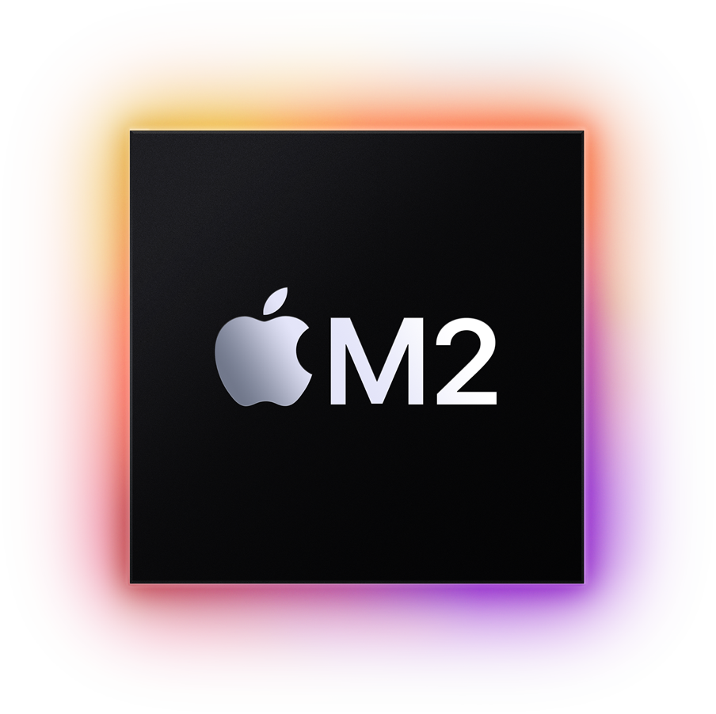
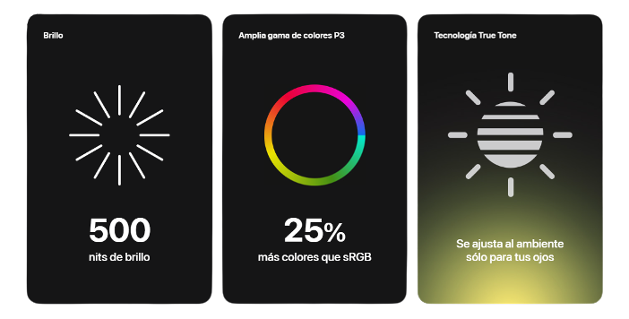

El chip M2 supera al chip M1 en velocidad y eficiencia energética, y marca
el inicio de una nueva era para los chips de Apple. Con un potente
CPU de 8 núcleos, es capaz de ejecutar tareas complejas con facilidad.
Su increíblemente rápido GPU de 10 núcleos le permite crear gráficos
sorprendentes. El motor multimedia de alto rendimiento logra editar aún más
secuencias de video ProRes 4K y 8K. Y lo mejor: con hasta 24 GB de
memoria unificada, lo hace todo al mismo tiempo.
